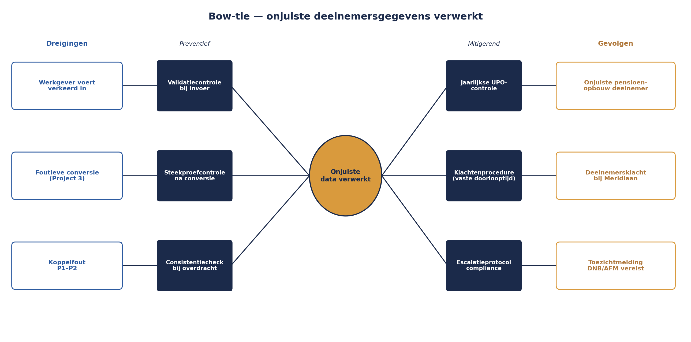
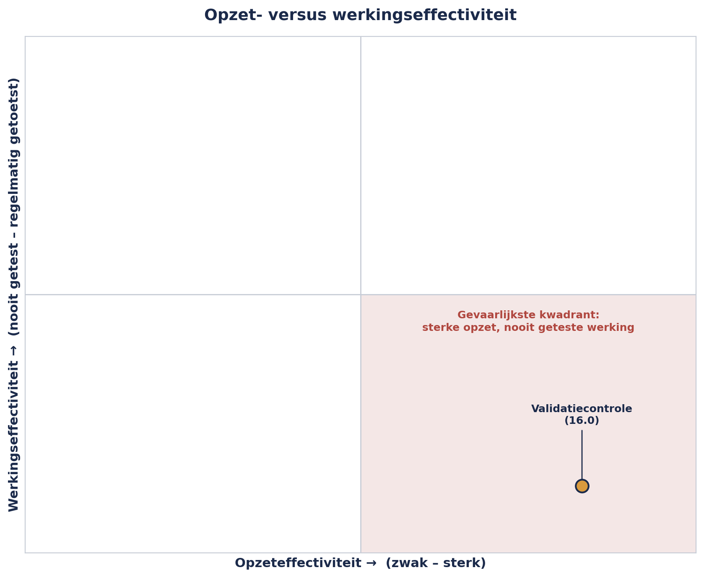

Cursus Risicomanagement · Niveau 2 (M_o_R 4/IRM) · Deel 16 van 30
Bow-tie-analyse: barrières die je test.
Acht maanden lang staat er in het risicoregister van Project 2 een maatregel die keurig "geïmplementeerd" heet — maar niemand heeft ooit getest of ze doet wat ze belooft. Dit deel introduceert de bow-tie: een diagram dat meerdere dreigingen, één centrale gebeurtenis en meerdere gevolgen in beeld brengt, elk met een eigen barrière, en dat een vraag afdwingt die een risicoregister alleen niet stelt — is een maatregel niet alleen goed ontworpen, maar ook aantoonbaar werkzaam?
6secties
±2uleestijd + werkboek
4controlevragen
3toetsmethoden §16.4
Positionering. Deze cursus is een voorbereiding op M_o_R 4 Practitioner (PeopleCert) en het IRM International Certificate in ERM (Institute of Risk Management), en uitdrukkelijk geen vervanging van het officiële examenmateriaal van die instanties. Controleer bij inschrijving altijd het actuele aanbod, de kosten en de examenvorm bij PeopleCert, het IRM of uw opleider zelf; informatie in dit materiaal is geverifieerd in augustus 2026 en kan wijzigen.
Niveau 2: 11 M_o_R 4: van project naar de hele onderneming → 12 Risicobereidheid, -capaciteit en toleranties → 13 Identificatie op programmaschaal → 14 Kwantitatief I: verwachtingswaarde, beslisbomen, drie-puntsschattingen → 15 Kwantitatief II: Monte Carlo-simulatie → 16 Bow-tie-analyse: oorzaken, gevolgen en barrières die je test (hier) → 17 Geaggregeerd risico en risico in verschillende leveringsmodellen → 18 IT- en cyberrisico → 19 Rapportage en besluitvorming → 20 Risicocultuur en gedrag → 21 De risicofunctie inrichten → 22 Examentraining en capstone: de geaggregeerde verdediging
01
De maatregel die er alleen op papier stond
⏱ 8 min
Bij de kwartaalcontrole van het Mutatieplatform-programma ontdekt Sanne Bakhuis iets ongemakkelijks. In het register van Project 2 (Verwerkingsengine) staat een risico — "onjuiste deelnemersgegevens worden verwerkt" — met als respons "verminderen: geautomatiseerde validatiecontrole bij invoer". De maatregel staat er al acht maanden, netjes ingevuld, status "geïmplementeerd".
Sanne vraagt door: wanneer is voor het laatst getest of deze validatiecontrole daadwerkelijk foute invoer tegenhoudt? Niemand weet het. De controle is ooit gebouwd, ooit "aan" gezet, en sindsdien nooit meer bekeken. Ze bestaat — maar niemand kan zeggen of ze werkt.
Dit deel behandelt het instrument dat dit soort blinde vlekken structureel zichtbaar maakt: bow-tie-analyse.
02
Wat een bow-tie is
⏱ 10 min
Een bow-tie-diagram (vernoemd naar zijn vorm — een strik, breed aan beide kanten, smal in het midden) brengt drie dingen in één beeld samen: de dreigingen die tot een risico kunnen leiden (links), het risico zelf als centrale gebeurtenis (het middelpunt), en de gevolgen die daaruit kunnen voortvloeien (rechts) — met op beide zijden de barrières (maatregelen) die dreigingen moeten tegenhouden, respectievelijk gevolgen moeten beperken.
Dit is een andere manier van kijken dan de risicozin uit deel 1 (niveau 1), die één oorzaak, één gebeurtenis en één gevolg in een lineaire zin vastlegt. Een bow-tie erkent dat een centrale gebeurtenis meestal meerdere dreigingen als mogelijke aanleiding heeft, en meerdere mogelijke gevolgen — en dat voor elke afzonderlijke route een eigen barrière nodig kan zijn.
Figuur 16-1 — een lege bow-tie-structuur: dreigingen links via preventieve barrières, de centrale gebeurtenis in het midden, gevolgen rechts via mitigerende barrières.
03
Sanne's bow-tie voor het dataverwerkingsrisico
⏱ 16 min
Centrale gebeurtenis: onjuiste deelnemersgegevens worden verwerkt in de Verwerkingsengine.
Dreigingen (links), elk met een eigen preventieve barrière:
Dreiging
Preventieve barrière
Werkgever voert gegevens verkeerd in via het portaal
Geautomatiseerde validatiecontrole bij invoer (de maatregel uit §16.0)
Foutieve conversie vanuit Project 3 levert corrupte data aan
Steekproefcontrole na conversie, vóór doorzet naar productie
Koppelfout tussen Project 1 (portaal) en Project 2 (engine)
Geautomatiseerde consistentiecheck bij elke dataoverdracht
Gevolgen (rechts), elk met een eigen mitigerende barrière:
Vastgelegd escalatieprotocol richting compliance (deel 9, niveau 1)

Figuur 16-2 — de volledig ingevulde bow-tie voor het dataverwerkingsrisico, met drie dreigingen, de centrale gebeurtenis en drie gevolgen, elk met een eigen barrière.
Het beeld maakt in één oogopslag zichtbaar wat een risicozin niet laat zien: er zijn drie onafhankelijke manieren waarop dit risico zich kan voordoen, en drie verschillende soorten schade die eruit kunnen voortvloeien — elk met een eigen barrière die apart moet worden beoordeeld.
Controlevraag
Uit Werkboek deel 16, Opdracht 16.1 — Bouw een bow-tie
1Bouw, naar het voorbeeld hiernaast, een bow-tie voor het gedeelde-leveranciersrisico tussen Project 1 en Project 4 uit deel 13 (de externe leverancier van het communicatieplatform kan de gecombineerde vraag van beide projecten niet aan). Noem minstens twee dreigingen en twee gevolgen, elk met een barrière.Toon antwoord
Geen vast antwoord — toepassingsopdracht. Ter kalibratie: dreigingen — (1) beide projecten plannen hun livegang in dezelfde maand zonder onderlinge afstemming, barrière: een gedeelde leverancierskalender, bijgehouden door Sanne; (2) de leverancier heeft zelf een onderbezetting door personeelsverloop, barrière: contractuele capaciteitsgarantie met boeteclausule. Gevolgen — (1) vertraging in de portaallancering (P1), barrière: een uitwijkscenario met een tweede, kleinere leverancier; (2) vertraging in de deelnemerscommunicatie (P4), barrière: een handmatig proces als tijdelijke terugval. Let op: de twee gevolgen horen hier bij twee verschillende projecten — precies het soort risico waarvoor deel 17 een oplossing voor eigenaarschap biedt.
04
Opzet- versus werkingseffectiviteit
⏱ 16 min
Dit is de kern van dit deel, en de reden dat de bow-tie meer is dan een mooi plaatje. Voor elke barrière stel je twee, principieel verschillende vragen:
Opzeteffectiviteit: is de barrière, zoals ontworpen, in theorie geschikt om de dreiging tegen te houden of het gevolg te beperken? Dit is een vraag die je kunt beantwoorden door het ontwerp te bekijken — een document, een procesbeschrijving, een technische specificatie.
Werkingseffectiviteit: functioneert de barrière ook daadwerkelijk zo, in de praktijk, op dit moment? Dit kun je alleen beantwoorden door te testen — een steekproef nemen, een simulatie draaien, een logboek controleren.
De validatiecontrole uit §16.0 heeft een goede opzet — het idee is zonder meer verdedigbaar. Maar niemand heeft ooit de werking getoetst. Acht maanden lang stond er, feitelijk, een barrière op papier die net zo goed niet had kunnen bestaan, want niemand kon zeggen of ze iets tegenhield.
Kernzin 10 van de cursus
Een maatregel die nooit op werking is getoetst, is geen beheersing — het is hoop met een naam erop.
Dit sluit direct aan bij het onderscheid inherent/residueel risico uit deel 5-6 (niveau 1): een residuele score die uitgaat van een niet-geteste maatregel, is in werkelijkheid nog gewoon de inherente score, vermomd als iets beters.

Figuur 16-3 — opzeteffectiviteit tegen werkingseffectiviteit; de validatiecontrole staat rechtsonder: sterke opzet, nooit geteste werking — het gevaarlijkste kwadrant.
Controlevraag
Uit Werkboek deel 16, Opdracht 16.2 — Opzet of werking?
1"De tweede-goedkeuring-eis staat correct beschreven in het proceshandboek, maar niemand heeft ooit gecontroleerd of hij ook wordt toegepast." Gaat dit over opzeteffectiviteit, werkingseffectiviteit, of allebei — en wat betekent dat voor de status van deze maatregel in het register?Toon antwoord
Alleen opzeteffectiviteit is bevestigd; werkingseffectiviteit is onbekend — exact de situatie van de validatiecontrole uit §16.0. De residuele score in het register (deel 7, niveau 1) mag niet uitgaan van een werkende maatregel totdat de werking is aangetoond; tot die tijd is de score effectief nog de inherente score.
05
Hoe je werking toetst
⏱ 14 min
Drie praktische manieren om werkingseffectiviteit vast te stellen, oplopend in intensiteit:
Steekproef. Neem een aantal recente gevallen (bijvoorbeeld twintig ingevoerde mutaties van de afgelopen maand) en controleer handmatig of de barrière deed wat hij moest doen.
Walkthrough. Loop het proces samen met de uitvoerder stap voor stap door, en vraag concreet: "laat me zien wat er gebeurt als ik hier een foute waarde invoer." Dit is sneller dan een steekproef maar minder statistisch overtuigend — geschikt als eerste, snelle check.
Doorlopende monitoring via een KRI. Zoals in deel 8 (niveau 1) geïntroduceerd: een indicator die continu, niet eenmalig, aangeeft of de barrière actief blijft functioneren — bijvoorbeeld "aantal keer per maand dat de validatiecontrole een fout daadwerkelijk blokkeert" (te laag kan wijzen op een controle die zelf niet meer actief is, niet per se op een afwezigheid van fouten).
Bij Sanne's controle op de validatiecontrole blijkt, via een snelle steekproef van vijftien recente invoergevallen, dat de controle in twee van drie geconstateerde fouten wél werkte — maar in het derde geval niet, omdat een software-update zes maanden eerder een deel van de validatieregels stilzwijgend had uitgeschakeld. Niemand had dat gemerkt, omdat niemand ooit had getest.
Controlevraag
Uit Werkboek deel 16, Opdracht 16.3 — Kies een toetsmethode
1Een geautomatiseerde controle verwerkt elke dag duizenden transacties. Een nieuw ingerichte controle wil je snel, zonder veel voorbereiding, een eerste indruk geven of hij logisch werkt. Welke toetsmethode past bij elk van deze twee situaties, en waarom?Toon antwoord
Bij hoog volume: doorlopende KRI — een periodieke steekproef is dan minder efficiënt dan een continue indicator die afwijkingen automatisch signaleert. Bij een snelle, verkennende eerste indruk: walkthrough — weinig voorbereiding, geschikt vóórdat een uitgebreidere steekproef de moeite waard is. Er is geen universeel beste methode; de keuze hangt af van volume en doel, net zoals er in deel 4 (niveau 1) geen universeel beste identificatietechniek was.
06
Escalatiefactoren
⏱ 16 min
Een laatste, geavanceerder onderdeel van bow-tie-analyse: escalatiefactoren zijn omstandigheden die niet zelf een dreiging zijn, maar die één of meerdere barrières tegelijk kunnen uitschakelen. De software-update in §16.4 is hier een voorbeeld van, al werd hij pas achteraf als zodanig herkend.
Een programmabreed escalatiefactor die Sanne identificeert: een capaciteitstekort bij het testteam (gedeeld tussen meerdere projecten, zie de gedeelde-middelen-categorie uit deel 13) kan er in de praktijk toe leiden dat zowel de validatiecontrole bij Project 2 als de steekproefcontrole bij Project 3 tegelijk minder frequent worden uitgevoerd — niet omdat beide afzonderlijk falen, maar omdat dezelfde onderliggende oorzaak beide barrières tegelijk verzwakt.
Dit is dezelfde logica als correlatie in de Monte Carlo-simulatie van deel 15: een gedeelde onderliggende factor die meerdere, ogenschijnlijk onafhankelijke zaken tegelijk raakt. Een escalatiefactor die op meerdere barrières inwerkt, verdient daarom een eigen plek in het register — niet verstopt binnen de barrière-beoordeling van elk risico apart.
Controlevraag
Uit Werkboek deel 16, Opdracht 16.4 — Vind de escalatiefactor
1Twee, ogenschijnlijk onafhankelijke barrières falen in dezelfde maand: de validatiecontrole bij Project 2 laat een fout door, en de steekproefcontrole bij Project 3 wordt die maand niet uitgevoerd. Bij onderzoek blijkt dat beide teams tijdelijk onderbezet waren omdat drie ervaren testers tegelijk met verlof waren. Toevallige samenloop, of een escalatiefactor?Toon antwoord
Dit wijst op een escalatiefactor: een gedeelde onderliggende oorzaak (de gelijktijdige afwezigheid van testcapaciteit, mogelijk gekoppeld aan een structureel probleem met hoe verlofplanning en projectplanning op elkaar worden afgestemd) die twee, op het eerste gezicht onafhankelijke barrières tegelijk heeft verzwakt. Geen toeval in de zin van willekeur — er is een aanwijsbare, gemeenschappelijke reden. De juiste vervolgstap is niet alleen de twee individuele barrières herstellen, maar de escalatiefactor zelf als aparte risico-ingang vastleggen, met een eigen respons zoals een gedeelde capaciteitskalender voor kritieke controlefuncties. Wie alleen de twee individuele barrières herstelt zonder de escalatiefactor te adresseren, zal dezelfde onderliggende oorzaak op een ander moment opnieuw meerdere barrières tegelijk zien verzwakken.
Samenvattend: een bow-tie brengt meerdere dreigingen, één centrale gebeurtenis en meerdere gevolgen in beeld, elk met eigen barrières — rijker dan de lineaire risicozin voor risico's met meerdere oorzaken of gevolgen. Opzeteffectiviteit en werkingseffectiviteit zijn twee aparte vragen; de tweede vereist testen, niet alleen beoordelen (Kernzin 10). Drie manieren om werking te toetsen: steekproef, walkthrough, doorlopende monitoring via een KRI. En escalatiefactoren zijn omstandigheden die meerdere barrières tegelijk kunnen uitschakelen — dezelfde logica als correlatie uit deel 15, nu toegepast op beheersmaatregelen in plaats van op onzekere uitkomsten.
Verder naar deel 17
Deel 17 keert terug naar de vraag die deel 13 bewust open liet: wie is eigenaar van een risico dat aan meerdere projecten tegelijk toebehoort? En waarom mag je risicoscores over projecten heen niet zomaar optellen, ook al is de verleiding groot?